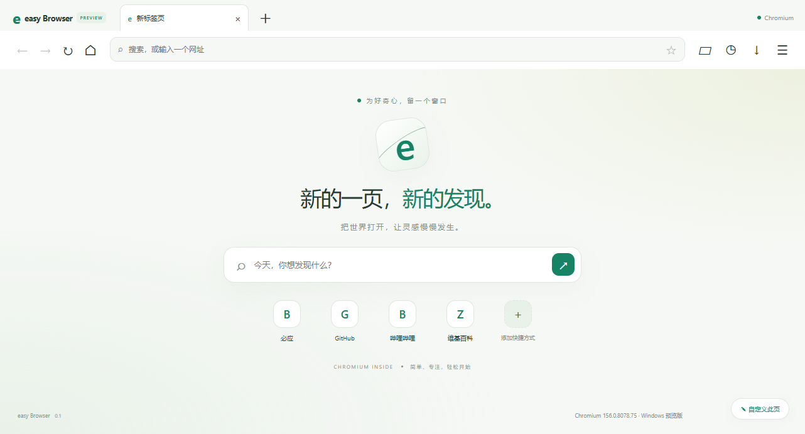

日常浏览
多标签、Ctrl+Tab 切换、Ctrl+Shift+T 恢复标签，会话恢复、书签、历史、下载与主题。
11月10日安装包已更新：普通网页链接新建并切换标签，保留来源页。
基于 Chromium 的发布候选版：常用浏览、全屏游戏、广告过滤和网页 AI，放在一个安静的窗口。
下载 easy Browser ↓
多标签、Ctrl+Tab 切换、Ctrl+Shift+T 恢复标签，会话恢复、书签、历史、下载与主题。
工具栏或 Ctrl+Shift+A 呼出助手；首页可切换 AI 模式。配置兼容 API 或关联 easy API 设置。
开启结合当前网页后，将页面可见文字和问题发送给模型，排除表单、密码框、隐藏文字与脚本。不识别网页图片或视频。
内置 Ghostery 引擎与本地 EasyList。可全局关闭、为当前网站设置例外或手动更新规则；不保证去掉全部广告。
检测普通 HTTPS 登录框并提示保存，保存前由你确认；再次访问同来源、仅有一个账号时可补全，不自动提交。
F11 全屏；网页游戏使用真正的相对鼠标锁定。Esc 释放光标，Ctrl+Alt+左 Shift 可切换释放与重新锁定。
无痕使用内存网站会话；设置可清理 Cookie、缓存和当前站数据。下载的文件仍会留在磁盘。
摄像头、麦克风、通知等需要逐次同意；游戏鼠标锁定在前台来源与交互检查后处理。设备还受系统权限限制。
适合想尝试轻量 Chromium、网页 AI 和休闲网页游戏的用户。依赖扩展、同步或企业兼容性的工作建议保留成熟浏览器。
默认安装到 D 盘，可在安装时更改目录。安装前请先关闭正在运行的浏览器。
142.8 MiB · Windows x64 · D:\easy Browser浏览器不包含在三款软件的整合安装包中，原整合包内容不变。
当前已支持无痕窗口和更新检查；下载后校验 GitHub 摘要，由用户手动安装。尚无代码签名自动升级链、Chrome 扩展商店或账号同步。
系统加密不能防御已控制当前 Windows 账号的恶意程序；请保留可信网站判断。测试使用虚拟设备，没有读取真实密码。
发布候选版仍需干净设备安装、长时间稳定性及更多真实网站测试；不保证所有 DRM、编解码、特殊设备或第三方登录兼容。
请在 GitHub Release 下载同名安装包。